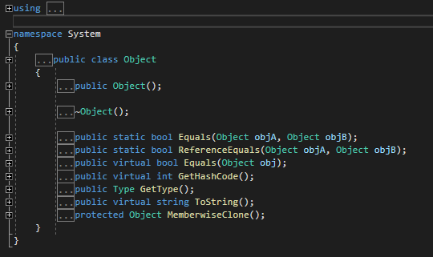
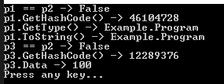
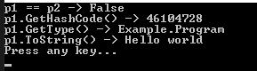
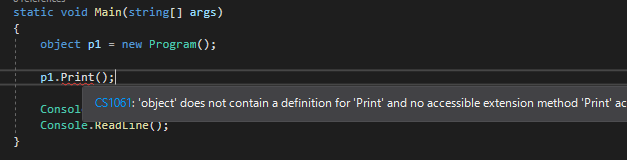

こんにちは。明月です。
この投稿は最上位クラス(Object クラス)に関する説明です。
C#にはオブジェクトの最小単位がクラスになっています。
link - [C#] 10. クラスを作成する方法(コンストラクタ、デストラクタ)
そのクラスは基本的にObjectのクラスを継承することになっています。
link - [C#] 13. クラスの継承と再定義(override)する方法、overrideとnewの差異
その意味はクラスの隣に継承する定義をしなくてもObjectクラスを継承します。つまり、C#に存在するすべてのクラスはObjectクラスを継承します。
Objectクラスの基本構成は下記通りです。

基本的にStaticが付けてないEquals関数は比較(クラスの中でメンバー変数のデータではなく、インスタンスが同じかを比較)関数、GetHashCode関数はポインタアドレスをHashデータで変換した値、GetTypeはクラスのデータタイプ、ToStringはクラスをStringタイプに表す関数、MemberwiseCloneの関数はデザインパターンのプロトタイプのクラスインスタンスコピー(ポインタコピーではなく、クラスのデータがすべて複製)があります。
つまり、すべてのクラスは上の関数を基本的に継承して使えます。
using System;
namespace Example
{
class Program
{
// メンバー変数のプロパティ
public int Data
{
get; set;
}
// 実行関数
static void Main(string[] args)
{
// インスタンス生成
var p1 = new Program();
p1.Data = 100;
var p2 = new Program();
// p1とp2のインスタンスが同じか確認
Console.WriteLine("p1 == p2 -> " + p1.Equals(p2));
// ポインタアドレスをHashCodeでリターン
Console.WriteLine("p1.GetHashCode() -> " + p1.GetHashCode());
// クラスタイプ
Console.WriteLine("p1.GetType() -> " + p1.GetType());
// ToStringの結果
Console.WriteLine("p1.ToString() -> " + p1.ToString());
// インスタンスコピー
var p3 = p1.MemberwiseClone() as Program;
// p1とp3のインスタンスが同じか確認
// インスタンスを個ぴ＾したが別のインスタンスなのでfalse
Console.WriteLine("p3 == p2 -> " + p3.Equals(p2));
Console.WriteLine("p3.GetHashCode() -> " + p3.GetHashCode());
Console.WriteLine("p3.Data -> " + p3.Data);
// 任意のキーを押してください
Console.WriteLine("Press any key...");
Console.ReadLine();
}
}
}

上の例をみればProgramクラスはObjectクラスを明示的に継承してないです。でも、Objectの関数を使えますね。
つまり、明示的に継承することを実装しなくても、クラスは基本的にObjectクラスを継承することを確認できます。
そしてEquals関数とGetHashCode関数、ToString関数はvirtualキーワードが付けているので再定義も可能です。
using System;
namespace Example
{
// クラス
class Program
{
// ToString関数の再定義
public override string ToString()
{
// string文字リターン
return "Hello world";
}
// Equals関数再定義
public override bool Equals(Object obj)
{
// nullならfalse
if (obj == null)
{
return false;
}
// データタイプが違いならfalse
if (obj.GetType() != typeof(Program))
{
return false;
}
// インスタンスポインタアドレスが同じならtrue、違いならfalse
return this.GetHashCode() == obj.GetHashCode();
}
// GetHashCode関数再定義
public override int GetHashCode()
{
// インスタンスポインタはhashcodeではなく、他の値でリターンが可能
// 参考にStringクラスはりてリテラルの値
return base.GetHashCode();
}
// 実行関数
static void Main(string[] args)
{
// インスタンス生成
var p1 = new Program();
var p2 = new Program();
// p1とp2のインスタンスが同じか確認
Console.WriteLine("p1 == p2 -> " + p1.Equals(p2));
// ポインタアドレスをHashCodeでリターン
Console.WriteLine("p1.GetHashCode() -> " + p1.GetHashCode());
// クラスタイプ
Console.WriteLine("p1.GetType() -> " + p1.GetType());
// ToStringの結果
Console.WriteLine("p1.ToString() -> " + p1.ToString());
// 任意のキーを押してください
Console.WriteLine("Press any key...");
Console.ReadLine();
}
}
}

上の例ををみればEquals関数とGetHashCode関数、ToString関数を再定義します。
なのでGetHashCodeの関数は常にインスタンスポインタアドレスではない可能性もあります。参考にStringクラスのGetHashCodeはポインタアドレスではなく、リテラル値です。
Stringに関しては他の投稿で詳細に説明します。
Objectのクラスは最上位クラスになるので、変数宣言する時、どのインスタンスでも変数のデータタイプに設定することができます。
using System;
namespace Example
{
class Program
{
// 関数作成
public void Print()
{
// コンソール出力
Console.WriteLine("Hello world");
}
// 実行関数
static void Main(string[] args)
{
// インスタンス生成
object p1 = new Program();
// ProgramクラスにはPrint関数があるが、objectクラスの関数ではないので、エラーが発生
p1.Print();
// 任意のキーを押してください
Console.WriteLine("Press any key...");
Console.ReadLine();
}
}
}

objectクラスにはPrintという関数がないので、エラーが発生します。
dynamicキーワードが基本的にobjectのデータタイプですが、該当なデータタイプに関数や変数が存在しなくてもReflection機能で関数や変数を探すのでエラーが発生しません。
objectデータタイプはデバッグ段階でエラーが発生します。
ここまで最上位クラス(Object クラス)に関する説明でした。
ご不明なところや間違いところがあればコメントしてください。
- [C#] 41. Taskクラスとasync、awaitを使い方2021/10/01 18:59:14
- [C#] 40. Linqを利用した並列処理(Parallel)を使い方2020/05/13 17:37:13
- [C#] 39. lockキーワードとdeadlock(デッドロック)2019/07/24 00:57:35
- [C#] 38. ThreadPoolの使い方2019/07/23 00:05:40
- [C#] 37. スレッド(Thread)を使い方、Thread.Sleep関数を使い方2019/07/22 23:45:05
- [C#] 36. 拡張メソッドを使い方2019/07/22 23:30:17
- [C#] 35. 文字列クラス、StringとStringBuilderを使い方2019/07/22 23:15:42
- [C#] 34. 最上位クラス(Object クラス)2019/07/20 02:27:23
- [C#] 33. 匿名形式(Anonymous Types)を使い方2019/07/20 02:22:03
- [C#] 32. ジェネリックタイプ(Generic Type)を使い方2019/07/18 22:50:16
- [C#] 31. アトリビュート(Attribute)を使い方2019/07/18 20:22:16
- [C#] 30. Linq関数式を使う方法2019/07/17 23:06:42
- [C#] 29. Linqクエリ式を使い方2019/07/17 20:57:00
- [C#] 28. リスト(List)とディクショナリ(Dictionary)、そしてLinq式を使い方2019/07/16 22:40:03
- [C#] 27. varキーワードとdynamicキーワード2019/07/16 20:41:27
- [C#] 54. Reflection機能を使い方 - Attribute2021/10/20 19:29:31
- [Project design] プログラム制作(コーディング) - クラス作成方法2021/10/20 19:28:09
- [C#] 53. Reflection機能を使い方 - Propertyとevent2021/10/19 21:02:58
- [Project design] プログラム制作(コーディング) - 関数作成方法2021/10/19 21:01:32
- [CentOs] ジェンキンス(Jenkins)をインストールする方法2021/10/18 18:28:58
- [Project design] 詳細設計(インターフェース設計と抽象化作業)2021/10/18 18:23:15
- [Project design] 基本設計(画面設計とDB設計)2021/10/17 21:21:11
- [Design pattern] 1-4. デザインパターンの抽象ファクトリーパターン(Abstract factory pattern)2021/10/15 19:31:03
- [Project design] 要件定義(要求事項整理)2021/10/15 19:28:58
- [C#] 52. Reflection機能を使い方 - Variable2021/10/15 19:27:37
- [Project design] プロジェクトを工程(ウォーターフォール vs アジャイル)2021/10/14 18:36:04
- [C#] 51. Reflection機能を使い方 - Method2021/10/14 18:34:21
- [C#] 50. Reflection機能を使い方 - Class2021/10/13 18:34:13
- [C#] 49. Operator(演算子)のオーバーロードを使い方2021/10/12 18:28:42
- [C#] 48. IEnumerableとIEnumerator、そしてyieldキーワード2021/10/11 19:49:33